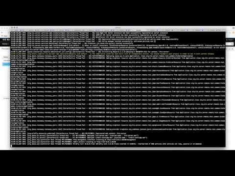
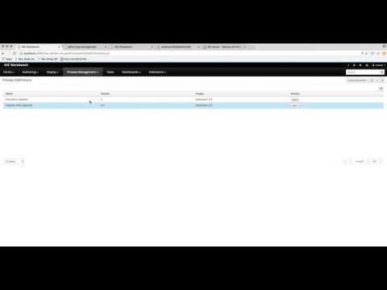

KIE Server router – even more flexibility
KIE Server promotes architecture where there are many KIE Server instances responsible for running individual projects (kjars). Than in turn might be completely independent domains or the other way around – related to each other but separated on different runtime to avoid negative impact on each other.

At this point, the client application needs to be aware of all the servers to properly interact with the servers. To put it in details client application needs to know:
- location (url) of HR KIE Server
- location (url) of IT KIE Server 1 and IT KIE Server 2
- containers deployed to HR KIE Server
- containers deployed to IT KIE Server (just one of them as they are considered to be homogeneous)
While knowing about available containers is not so difficult and can be retrieved from running server, knowing about all the locations is more tricky. Especially in dynamic (cloud) environments where servers can come and go based on various conditions.
To deal with these problems, KIE Server introduces new component – KIE Server Router. Router is responsible to bridge all KIE Servers grouped under same router to provide unified view of all servers. Unified view consists of:
- Find the right server to deal with requests
- Aggregate responses from different servers
- Provide efficient load balancing
- Deal with changing environment – like added/removed server instances
Then the only thing client knows is the location of the router. Router then exposes most of the capabilities of the KIE Server over HTTP. It comes with two main responsibilities:
- proxy to the actual KIE Server instance based on contextual information – container id or alias
- aggregator of data – to collect information from all distinct server instances in single client request

There are two types of requests KIE Server Router supports from client perspective:
- Modification requests – POST, PUT, DELETE – HTTP methods are all considered as such. Main requirement to be properly proxied is that it includes container id (or alias) in the URL
- Retrieval requests – GET – HTTP method are seen as that as well. Though when they do include container id will be handled the same way as modification requests.
- Registers new servers and containers when server or container starts on any of the KIE Server instance
- Unregisters existing servers and containers when server or container stops on any KIE Server instance
- List available configuration of the router – what servers and containers it is aware of
Other than the available containers and servers, KIE Server Router does not keep any information. This might not cover all possible scenarios but it does cover quite few of them.

KIE Server Router comes in two pieces:
- proxy that acts like a server
- client that is included in kie server to integrate with the proxy
- When container is started (successfully) it will register it in the router
- When container is stopped (successfully) it will unregister it from router
- When entire server instance is stopped, it will unregister all containers (that are in state started) from router
org.kie.server.router
KIE Server router exposes api that is completely compatible with KIE Server Client interface so you can use the java client to talk to router as you would do when talking to any KIE Server instance. Though it has some limitations:
- Router cannot be used to deploy new containers – this is due to it will not know given container id yet and thus won’t be able to decide in which server it should be deployed to
- Router cannot deal with modification requests to endpoints of KIE Server that is not based on container id
- Jobs
- Documents
- Router will return hard coded response when requesting KIE Server info
See basic KIE server Router capabilities in action in following screen cast:

Response aggregators
Retrieval requests are responsible for collecting data from various sources but they must return all the data aggregated into single response – that is well structured. Here response aggregators come into the picture. There are dedicated response aggregators that are per data format:
- JSON
- JAXB
- Xstream
All aggregated responses are compatible with data model returned by KIE Server and thus can be consumed by KIE Server Client without any issues.
Aggregators support both sorting and pagination of the aggregated results. It does the aggregation and sorting and paging on the router side. Though the initial sorting is done on the actual KIE Server instances as well to make sure it is properly respected on the source data.
Paging on the other side is bit more tricky as it needs to ask KIE Servers to always give from page 0 up to the requested one to properly take into consideration all KIE Servers before returning requested page.
See paging and sorting in action in following screencast.

That concludes quick tour about KIE Server Router that should provide more flexibility in dealing with more advanced environments with KIE Servers.
Comments, questions, ideas as usual – welcome